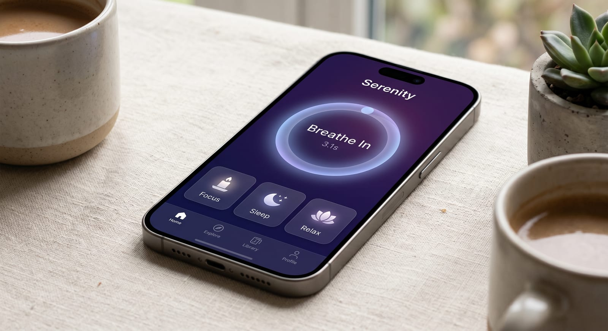
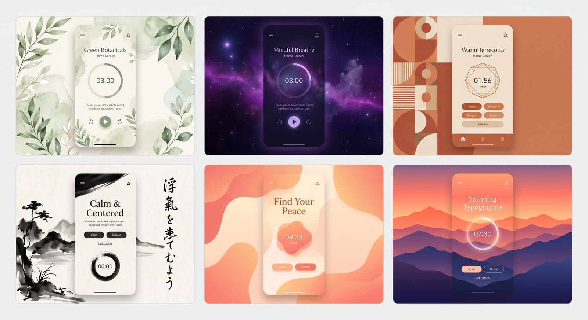
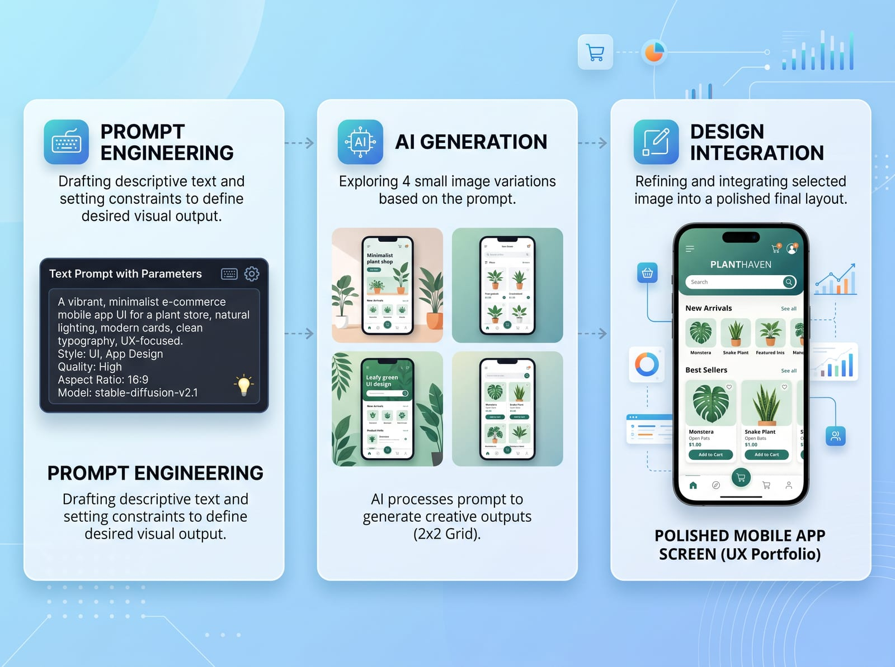
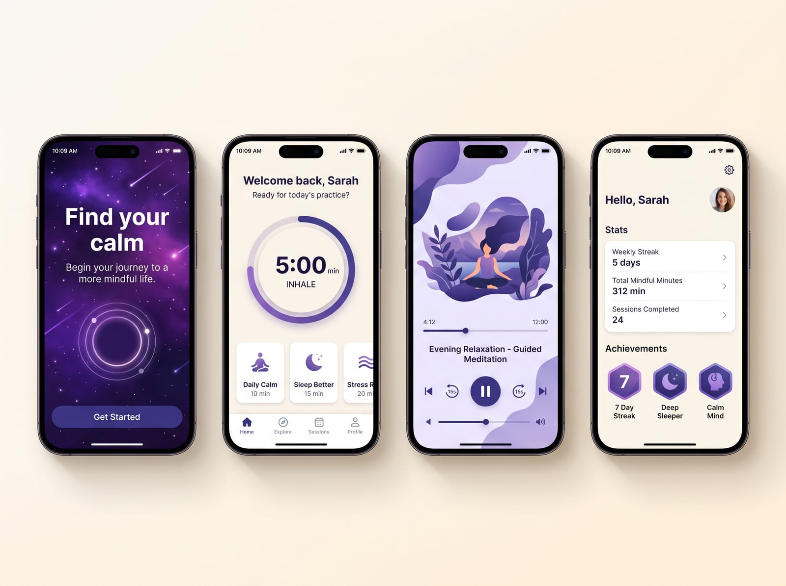

UX Design · AI-Native Workflow · 2026
MindSpace
冥想与专注力 App
Stable Diffusion 驱动的 UX 设计流程——AI 加速视觉探索，设计师负责判断与整合

01 · Project Overview
项目背景 · 为什么做冥想 App
冥想 App 市场已有 Calm、Headspace 等成熟产品，但设计语言趋于同质化。 MindSpace 的核心命题：能否用 AI 生图探索出差异化的视觉方向，并完整落地为可用的设计系统？
🎯 目标
面向 20-35 岁城市用户，视觉语言区别于现有竞品，同时保持可用性和设计一致性。
🤖 AI 角色
Stable Diffusion 负责视觉方向探索、插图生成、背景资产。设计师负责信息架构与交互逻辑。
📐 范围
4 个核心界面：Onboarding → Home → Session → Profile。覆盖新用户引导到日常使用的完整闭环。
02 · AI-Powered Concept Exploration
AI 驱动的视觉方向探索
传统设计流程探索 6 种视觉方向需要 2-3 周。使用 Stable Diffusion，6 组概念在 2 天内完成——从 Prompt 撰写到生成、筛选、对比。

Stable Diffusion 生成的 6 种视觉风格探索：水彩植物 · 星云渐变 · 几何暖色 · 禅意水墨 · 有机流体 · 山峦剪影
AI 不会替你做决定——但它让"对比 6 种方案"的成本从三周降到两天。设计师的价值不在执行速度，而在判断力：你知道哪个方向值得深入。
03 · Stable Diffusion Workflow
Prompt → 生成 → 筛选 → 落地
展示 Stable Diffusion 如何嵌入 UX 设计流程。不是"AI 一键生成设计稿"，而是设计师用 Prompt 工程控制方向，AI 加速资产生产，最终由设计师整合为可用界面。
Prompt 工程
撰写精准的图文描述，控制风格、色彩、构图。使用 negative prompt 排除干扰元素，调整 CFG scale 和 steps。
SD · Prompt Engineering批量生成与筛选
每个方向生成 8-12 张变体，按视觉质量、品牌匹配度、扩展性三个维度评分，选出候选方向。
SD · img2img · 批量精修与设计整合
AI 生成的资产导入 Figma，进行色彩校正、构图调整、与 UI 组件的融合。AI 提供原材料，设计师完成烹饪。
Figma · 设计系统
三阶段工作流：Prompt Engineering → 多方案生成 → 入选方案精修与 UI 整合
04 · Design System
从 AI 资产到设计系统
AI 生成的视觉效果需要被"驯化"为可复用的设计 Token——色彩、圆角、阴影、间距、字体层级，每项决策都经过与 AI 素材的反复对照。
🎨 色彩系统
从"星云渐变"方向提炼主色调：深夜紫 #1a1a3e → 薰衣草 #7c5ce7 → 暖桃 #f0c8b0。建立完整 light/dark 双模式色板，Figma Color Styles 统一管理。
📝 字体层级
标题：SF Pro Display · 正文：Inter。5 级字号系统（32/24/18/15/13），行高 1.2-1.6。Figma Text Styles 保证 4 屏字体一致性。
🧩 组件库
18 个核心 Figma 组件：呼吸计时器、类别卡片、音频播放器、进度环、成就徽章。每个组件 4 个交互状态（default/hover/pressed/disabled），Auto Layout 自适应。
🖼 AI 资产规范
统一 AI 素材输出规格：2000×1500px、sRGB 色彩配置。确保不同批次素材无缝拼接，Figma 图稿中统一管理。
📱 移动端适配
4 屏均以 iPhone 15 Pro（393×852）为基准设计，同步提供桌面宽屏版本（1440×900）。组件间距与字号使用 Figma Variables 实现双断点切换，保证设计系统跨设备一致。
🔄 Figma 设计迭代流程
低保真线框图 → AI 生成视觉素材 → Figma 高保真整合 → 交互原型连线（Smart Animate + 条件交互）→ 可点击原型测试。AI 加速视觉探索，信息架构与交互逻辑全程 Figma 内手工打磨。
05 · Final Design
最终方案 · 4 屏展示
从 AI 生成的数百张素材中精选整合，落地为 4 个核心界面的高保真原型。

从左至右：Onboarding（AI渐变背景）· Home（呼吸计时器+分类卡片）· Session（音频播放+AI插图）· Profile（成就与数据）
Onboarding
AI 生成的星云渐变作为全屏背景，传达"进入内心空间"的仪式感。3 屏滑动引导。
Home
核心交互——呼吸计时器。大尺寸圆环降低操作精度要求，AI 生成的微缩插图作为分类卡片锚点。
Session
音频播放界面，AI 生成的意境插图作为播放器背景。波形可视化增加实时感。
Profile
数据仪表盘+成就系统。连续天数、总时长、完成课程数。AI 生成的抽象徽章作为成就图标。
06 · Reflection
关于 AI 与 UX 设计
这个项目最核心的收获不是学会了 Stable Diffusion 的操作——而是理解了 AI 在 UX 流程中的正确位置：它不是替代设计师的"自动设计机"，而是将"探索-筛选-决策"循环加速 10 倍的工具。设计师的判断力比以往任何时候都更重要。
SD 在 UX 中的最佳使用点
· 视觉方向探索——比 moodboard 更快更具体
· 插图与背景资产——品质接近定制插画
· 变体生成——一个方案出 12 个变体
· 图标概念发散——快速探索不同风格
SD 不能替代的
· 信息架构——AI 不理解用户心智模型
· 交互逻辑——状态转换、边界条件需要人
· 可用性判断——AI 不知道什么是"好用的"
· 设计系统一致性——需要设计师建立 Token